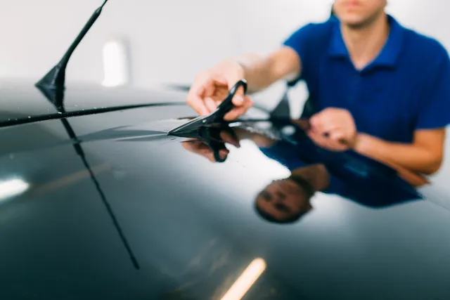
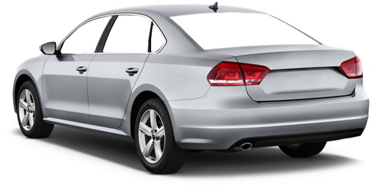
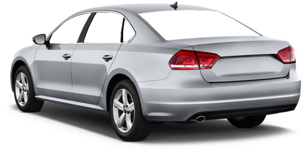
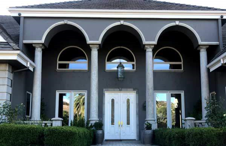

Zatamnjivanje stakala automobila
Garancija za atest u Srbiji i EU
10 godina garancija
Folije pružaju prijatnu vožnju u toplim danima, obezbeđujući intimu i sigurnost
Garancija za atest u Srbiji i EU
10 godina garancija
Folije pružaju prijatnu vožnju u toplim danima, obezbeđujući intimu i sigurnost
VIŠE INFORMACIJA


Zatamnjivanje stakala u objektima
Folije za sve vrste objekata
Dekorativne, peskarene, reflektujuće
nereflektujuće, anti grafit, sigurnosne zaštitne folije
UV providne protiv bleđenja
Folije za sve vrste objekata
Dekorativne, peskarene, reflektujuće
nereflektujuće, anti grafit, sigurnosne zaštitne folije
UV providne protiv bleđenja
VIŠE INFORMACIJA
ZATAMNJIVANJE AUTO STAKALA
Armolan folije za zatamnjivanje stakala automobila I objekata folijama visokog kvaliteta mogu se koristiti na staklima bilo kog automobila. Primarno dejstvo Armolan folije za stakla je smanjivanje toplote koja putem sunčevih zraka ulazi u automobile i objekte. Posebna funkcija ovih folija za auta, autobuse I objekte je u tome što regulišu toplotu i neugodno blještavilo sunca. Folija za zatamnjivanje stakala obezbjeđuju dodatnu sigurnost i štite privatnosti ljudi u automobile, autobusu I objektu. Različiti tipovi i boje folija doprinose i estetskoj vrednosti vozila I svih stambenih površina. Specijalne visoko kvalitetne folije razvijene za prednje šoferšajbne bile su prekretnica u sun control industriji. Sada je dostupna paleta providnih raznih nano-keramičkih I metaliziranih folija samo za potrebe prednje šoferke.
SIMULACIJA ZATAMNJENJA AUTO STAKLA POSLE UGRADNJE FOLIJE ZA ZATAMNJENJE
 

FOLIJE ZA STAKLA OBJEKATA
Folije se koriste i za private prostorije: zatamnjivanje stanova, kuća, vikendica, dnevnih boravaka, kupatila, staklenih terasa, i svih ostalih staklenih površina za ulepšavanje, intimu, bebednost (anti-vandal).
Kao I za poslovne prostorije: -Hoteli, restorani, apartmani, saloni, kafići, muzeji, apoteke, butici, kancelarije, magacini.

Kao I za poslovne prostorije: -Hoteli, restorani, apartmani, saloni, kafići, muzeji, apoteke, butici, kancelarije, magacini.
Kontakt